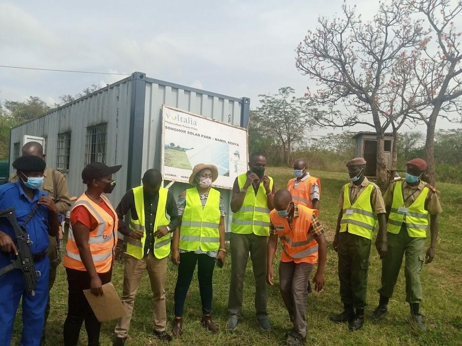

Decades of combined expertise across the full spectrum of renewable energy and infrastructure development in East Africa. We empower clients to make informed decisions, navigate complex regulations, and optimise project outcomes.
Ecotrunk International Ltd delivers expert consultancy services that empower clients to make informed decisions, navigate complex regulatory environments, and optimise project outcomes. Our multidisciplinary team brings decades of combined experience across the full spectrum of renewable energy and infrastructure development in East Africa. From feasibility studies that establish project viability to technical assessments that ensure engineering integrity, our consultancy practice is built on rigour, independence, and deep local knowledge. We work alongside developers, investors, government agencies, and communities to provide the analytical foundation that turns energy concepts into bankable, sustainable projects.
Our value lies not only in what we know but in how we apply it. Every consultancy engagement begins with a thorough understanding of your objectives, constraints, and operating context. We then deploy the right blend of technical analysis, financial modelling, regulatory insight, and stakeholder engagement to deliver recommendations that are both rigorous and practical. Whether you need a rapid technical review to support a funding application or a comprehensive multi-year environmental monitoring programme, our team scales to match the challenge. We pride ourselves on delivering clear, actionable advice that stands up to scrutiny from lenders, regulators, and partners.
Tailored advisory solutions across the entire project lifecycle from concept through commissioning and beyond.
Comprehensive viability assessment covering technical, financial, environmental, and social dimensions. We evaluate resource availability, technology options, regulatory requirements, and market conditions to provide clients with clear go/no-go recommendations.
Our feasibility reports include detailed risk analysis, financial modelling, sensitivity analysis, and implementation roadmaps tailored to each project's unique context, ensuring stakeholders have the confidence to commit capital and resources.
Detailed site surveys and technical evaluations to ensure projects meet required standards and stakeholder expectations. Our assessments cover topographic surveying, geotechnical investigation, resource measurement campaigns, and infrastructure condition assessment.
We deliver actionable recommendations backed by robust data and engineering analysis, enabling clients to proceed with precision and minimise technical risk throughout design and construction phases.
Comprehensive environmental and social impact assessment (ESIA) per NEMA and international standards. We guide clients through the regulatory approval process, develop mitigation and management plans, and facilitate community engagement.
Our approach ensures compliance while fostering positive community relations throughout the project lifecycle, integrating best practices in biodiversity conservation, stakeholder participation, and social safeguard implementation.
Robust M and E frameworks to track project progress, measure outcomes against baseline data, and identify performance gaps. We design custom indicator frameworks, establish data collection systems, and conduct periodic evaluations.
Our approach provides actionable recommendations for continuous improvement and adaptive management, ensuring projects remain on track to deliver intended benefits and that lessons learned inform future initiatives.
Capacity building services to equip client teams with the skills needed for successful project implementation and operations. Our training covers renewable energy fundamentals, project management, O and M best practices, and regulatory compliance.
We facilitate workshops, stakeholder meetings, and technical working groups, fostering knowledge transfer and collaborative problem-solving that empowers local teams to sustain project benefits long after handover.
Responsible management of natural resources balancing economic development with environmental preservation. We advise on sustainable resource utilisation, water management, land use planning, and ecosystem conservation.
Our approach integrates climate resilience and community benefit sharing, ensuring that projects contribute positively to local livelihoods while maintaining the ecological integrity of the landscapes in which they operate.
A structured, collaborative methodology ensuring every engagement delivers measurable value and actionable outcomes.
We begin by understanding your objectives, constraints, and context through in-depth consultation and stakeholder engagement, defining the scope and key success criteria before any analysis begins.
Our team gathers primary and secondary data using rigorous methodologies, conducting site surveys, resource assessments, and technical evaluations to build a robust evidence base for decision-making.
We analyse findings to generate clear, data-driven recommendations, supported by financial models, risk assessments, and implementation roadmaps tailored to your specific needs and context.
We deliver comprehensive reports and presentations, then remain engaged to support implementation, answer questions, and adapt recommendations as conditions evolve during project execution.
Clients choose Ecotrunk for our technical rigour, regulatory fluency, and unwavering commitment to their success.
Our team comprises qualified engineers, environmental specialists, and project managers with hands-on experience across solar, wind, hydro, and hybrid systems. We combine theoretical rigour with practical field experience to deliver solutions that work in Kenya's diverse operating conditions.
With deep familiarity across NEMA, EPRA, REREC, KPLC, and county-level permitting processes, we navigate Kenya's regulatory landscape efficiently on behalf of our clients. Our track record of successful approvals saves projects time, cost, and uncertainty.
Every engagement begins with listening. We tailor our approach to each client's unique context, budget, and timeline, ensuring recommendations are not just technically sound but practically implementable. Our long-term relationships are built on trust, transparency, and results.
Whether you need a feasibility study, environmental assessment, technical review, or capacity building programme, our consultancy team is ready to support your project with independent, rigorous, and actionable advice.
Start Your Consultation